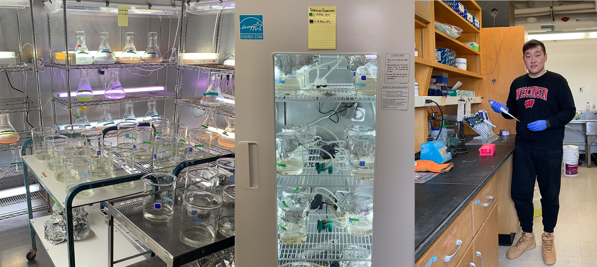
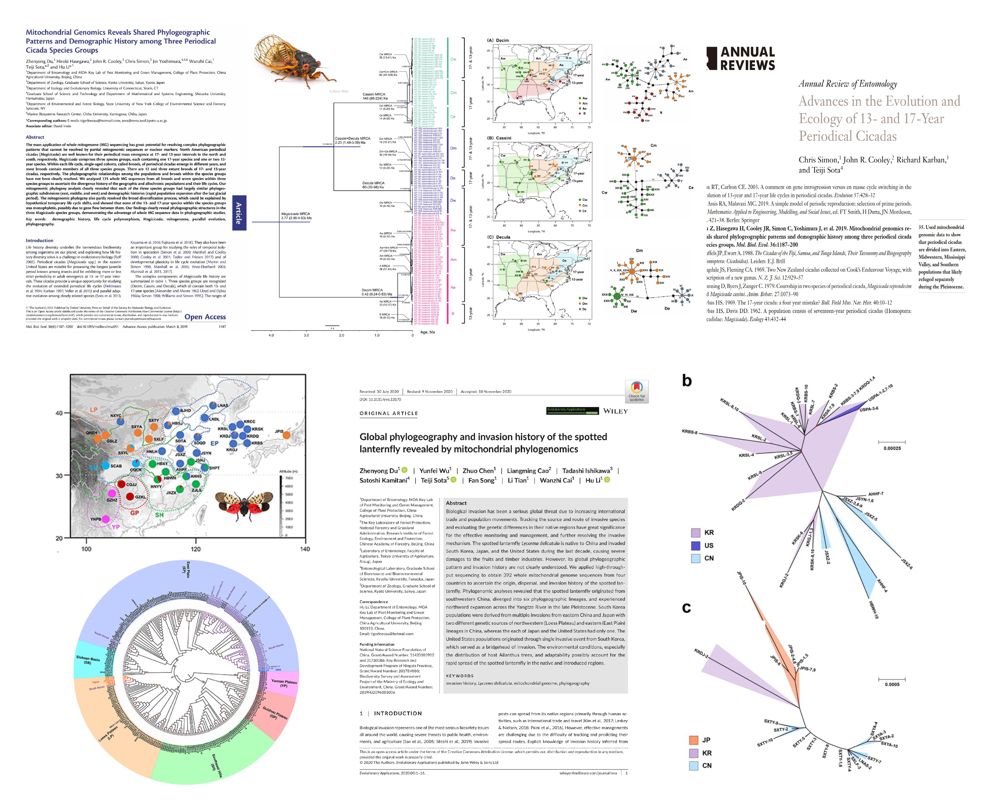

Zhenyong Du
I am currently a postdoctoral researcher in Lee Lab at University of Wisconsin-Madison. I obtained my Ph.D. degree in Evolutionary Entomology at China Agricultural University. My research interests lie primarily in genomic evolution during speciation, colonization, invasion and rapid adaptation of insects and other invertebrates.
Email /
Google Scholar /
Research Gate /
Lab page /
Curriculum Vitae
News
August, 2021: I moved to Madison from Beijing to join the Lee Lab as a postdoctoral researcher!
July, 2021: My Ph.D. thesis was awarded Ten Excellent Doctor Degree Dissertation of China Agricultural University!
June, 2021: I finished my Ph.D. thesis defense in Beijing!
Research Projects
Rapid evolutionary responses of copepod to global climate changes

My projects in Lee Lab at UW-Madison apply comparative and population genomic methods, using the copepod Eurytemora affinis species complex as a model system, to explore rapid evolutionary responses to global change. Specifically, my research focuses two main aspects, namely, (1) applying advanced technology to sequence and assemble the chromosome-level reference genomes for different sibling species within the E. affinis complex and performing comparative genomic analyses to resolve the genomic substrates underlying the high adaptive ability of these copepods, and (2) applying laboratory natural selection experiments (Evolve and Resequence) on E. affinis populations to acquire time-series data and identify candidate loci under selection. The goal is to study the epistatic interactions among different loci associated with adaptation to salinity decline and temperature increase, which are predicted consequences of climate change at higher latitudes.
Phylogeography of chosen hemipteran insects

My Ph.D. project in Cai Lab at China Agricultural University concentrated on population genetics of hemipteran insects to reveal their evolutionary histories including speciation, colonization and invasion firstly using PCR and latter NGS-based mitogenomic methods. During this period, I got some impressive results, such as periodical cicada paper published on Molecular Biology and Evolution in 2019 and spotted lanternfly paper published on Evolutionary Applications in 2020. Compared with mitogenome, whole genomic data could provide not only details on authentic and amazing evolutionary history, but also genetic mechanism and adaptive evolution, which is of my great interest. I recently completed chromosome-level genome sequencing of a global invasive sycamore lace bug with PacBio and Hi-C, and performed large-scale resequencing to study its invasive history and adaptation.
Presentations
January, 2023, Diversification and distribution pattern of hemipteran insects in East Asia. Northeast Asia Biodiversity Research Center Annual Meeting and International Symposium, Harbin, China.
October, 2020, Mitogenomic perspectives of evolutionary history in several Hemiptera insects. Biodiversity and Pest Green Prevention and Control Seminar, Hohhot, China (Invited talk).
September, 2020, Applications of mitogenome in population genetics of Hemiptera insects. Doctor Academic Forum of Nankai University, Vitually, China (Invited talk).
November, 2019, Global invasion history of Corythucha ciliata revealed by mitochondrial phylogenomics. Forum on Green Prevention and Control of Invasive Pests, Chongqing, China (Poster, Poster Award).
December, 2019, Mitochondrial genomics revealed shared phylogeographic patterns and demographic history among three periodical cicada species groups. Young Scholars Forum of the Entomological Society of China, Beijing, China (Invited talk).
August, 2018, Mitogenomic perspective of periodical cicada evolution. Periodical Cicada Workshop in Kyoto, Japan (Invited talk).
July, 2018, Phylogeography and life cycle switching of periodical cicadas revealed by mitochondrial genomics. Annual Academic Conference of the Entomological Society of China, Chengdu, China (Talk, Presentation Award).
Publications
2023:
- Genome architecture of an exceptionally invasive copepod crossing salinity boundaries
Du, Z., Gelembiuk, G., Moss, W., Tritt, A., & Lee, C. E.
Preprint, 2023 | paper
- Global invasion history and genomic signatures of adaptation of a highly invasive lace bug
Du, Z., Wang, X., Duan, Y., Liu, S., Tian, L., Song, F., Cai, W., & Li, H.
Awaiting submission, 2023 | paper
- Climatic oscillation promoted diversification of spinous assassin bug during Pleistocene glaciation
Du, Z., Zhao, Q., Wang, X., Sota, T., Tian, L., Song, F., Cai, W., Zhao, P., & Li, H.
Evolutionary Applications, 2023, 16:880-894 | paper
- Weak genetic structure of flower thrips Frankliniella intonsa in China revealed by mitochondrial genomes
Liu, X. §, He, J. §, Du, Z. §, Zhang, R., Cai, W., & Li, H. (§, co-first author)
International Journal of Biological Macromolecules, 2023, 231:123301 | paper
- The Jurassic epiphytic macrolichen Daohugouthallus reveals the oldest lichen-plant interaction in a Mesozoic forest ecosystem
Yang, Q., Wang, Y., Lücking, R., Lumbsch, T., Du, Z., Yunkang, C., ... & Wei, X.
iScience, 2023, 26:105770 | paper
2021:
- Global phylogeography and invasion history of the spotted lanternfly revealed by mitochondrial phylogenomics
Du, Z., Wu, Y., Chen, Z., Cao, L., Ishikawa, T., Kamitani, S., ... & Li, H.
Evolutionary Applications, 2021, 14:915–930. | paper
- Chromosome-level genome assembly of the aphid parasitoid Aphidius gifuensis using Oxford Nanopore sequencing and Hi-C technology
Li, B., Du, Z., Tian, L., Zhang, L., Huang, Z., Wei, S., ... & Li, H.
Molecular Ecology Resources, 2021, 21:941–954. | paper
- Integrative taxonomy of the spinous assassin bug genus Sclomina (Heteroptera: Reduviidae: Harpactorinae) reveals three cryptic species based on DNA barcoding and morphological evidence
Zhao, P., Du, Z., Zhao, Q., Li, D., Shao, X., Li, H., & Cai, W.
Insects, 2021, 12:251. | paper
- Population genetic structure of the invasive spotted alfalfa aphid Therioaphis trifolii (Hemiptera: Aphididae) in China inferred from complete mitochondrial genomes
Liu, X., Wei, S., Du, Z., He, J., Zhang, X., Li, H., … & Cai, W.
Frontiers in Ecology and Evolution, 2021, 9:759496. | paper
2020:
- The complete mitochondrial genome of the mealy plum aphid, Hyalopterus pruni (Hemiptera: Aphididae)
Liang, Y., Du, Z., Song, F., & He, J.
Mitochondrial DNA Part B, 2020, 5:3685–3687 | paper
2019:
- Mitochondrial genomics reveals shared phylogeographic patterns and demographic history among three periodical cicada species groups
Du, Z., Hasegawa, H., Cooley, J.R., Simon, C., Yoshimura, J., Cai, W., ... & Li, H.
Molecular Biology and Evolution, 2019, 36:1187–1200. | paper
- Phylogeography of the assassin bug Sphedanolestes impressicollis in East Asia inferred from mitochondrial and nuclear gene sequences
Du, Z., Ishikawa, T., Liu, H., Kamitani, S., Tadauchi, O., Cai, W., & Li, H.
International Journal of Molecular Sciences, 2019, 20:1234. | paper
- The conserved mitochondrial genomes of Drosophila mercatorum (Diptera: Drosophilidae) with different reproductive modes and phylogenetic implications
Wang, A., Du, Z., Luo, X., Zhang, F., Zhang, J., & Li, H.
International Journal of Biological Macromolecules, 2019, 138:912–918. | paper
2018:
- Invasion of the assassin bug Agriosphodrus dohrni (Hemiptera: Reduviidae) to Japan: Source estimation inferred from mitochondrial and nuclear gene sequences
Du, Z., Liu, H., Li, H., Ishikawa, T., Su, Z. H., Cai, W., ... & Tadauchi, O.
International Journal of Biological Macromolecules, 2018, 18:1565–1573. | paper
Services
Served as reviewers for academic journals, inclduing Molecular Phylogenetics and Evolution, Scientific Reports, Frontiers in Ecology and Evolution, Journal of Marine Science and Engineering, Biology, Genes, etc.
Awards
2023, The First Prize of the 19th Beijing Entomological Society Youth Excellent Scientific and Technical Paper.
2021, Outstanding Graduate of Beijing, Human Resources Department of Beijing.
2021, Ten Excellent Doctor Degree Dissertation, China Agricultural University.
2020, Syngenta Mary-Dell Chilton Scholarship, Syngenta Inc.
2019, National Scholarship, Ministry of Education of China.
2019, Syngenta Mary-Dell Chilton Scholarship, Syngenta Inc.
2019, Chancellor's Scholarship, China Agricultural University.
2019, Top 10 and Most Prominent Student, China Agricultural University.
2019, Outstanding Doctoral Award in Plant Protection, China Agricultural University.
2019, Excellent Student Scholarship, China Agricultural University.
2018, Excellent Student Scholarship, China Agricultural University.
2016, Outstanding Graduate, Human Resources Department of Shandong Prov.
2015, Outstanding Student Cadres, Education Department of Shandong Prov.
2014, Outstanding Student in Social Practice, Education Department of Shandong Prov.
2014, The 10 Most Outstanding Students, Shandong Agricultural University.
2014, Syngenta Agriculture Education Fund, Syngenta Inc.
Thanks Yunhe Wang for sharing the source code
source code